Prácticas
Una matriz LED es un display formado por un grupo de LED’s ubicados en forma de cuadrícula la cual muestra imágenes, símbolos o letras, según se enciendan unos u otros.
Dependiendo de la cantidad de LED’s con lo que cuente la matriz, tendremos una resolución u otra. A mayor cantidad, mayor resolución y, por tanto, nitidez en las imágenes que proyectemos.
Podemos encontrar letreros de matrices LED en los anuncios electrónicos, como los de las farmacias, los que llevan los autobuses, etc.
Micro:bit dispone de una matriz LED de 25 LED’s independientes de color rojo (5x5) que nos permitirá mostrar diferentes imágenes o textos de manera fácil, haciendo uso de los diferentes bloques de programación específicos.
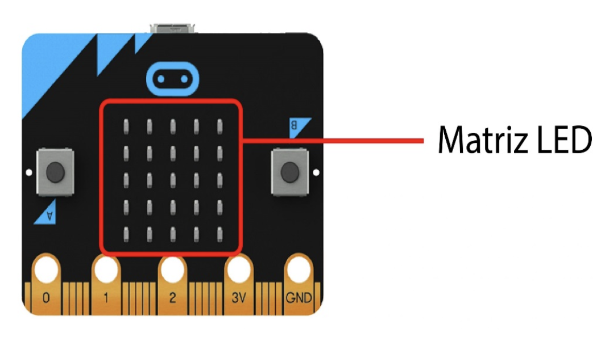
Las prácticas que debes realizar antes de poder hacer esta tarea son estas:
Práctica 1 - Hola Mundo
El primer código o secuencia de instrucciones que se programa en cualquier lenguaje siempre se denomina “Hola Mundo”.
Nuestro primer programa va a consistir en mostrar en la pantalla LED la secuencia de letras “HOLA MUNDO”.
Solo necesitamos dos bloques para conseguir esto:
| para siempre: que ejecuta las instrucciones que existan en su interior una y otra vez, hasta que la placa se apague. | 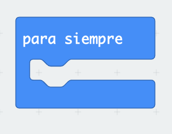 |
|
mostrar cadena: este bloque muestra en la matriz LED una cadena de caracteres en texto escritas en el espacio en blanco entre comillas. |
Con solo combinar estos dos bloques, habrás conseguido escribir tu primer programa de Micro:bit. Si tienes problemas para hacerlo, pulsa aquí abajo para ver el código final ya terminado:

Comprueba en la placa virtual que aparece a la izquierda que el programa funciona correctamente antes de pasar a la siguiente práctica. El resultado debe ser el siguiente:
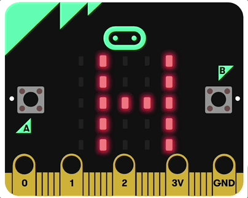
Práctica 2 - Animaciones
Micro:bit nos ofrece la posibilidad de crear “animaciones”. Alternando diversas imágenes que aparecen en nuestra matriz LED, de una manera ordenada, se consigue la ilusión visual de movimiento.
Para su programación necesitamos:
|
para siempre: ejecuta la secuencia de instrucciones de forma indefinida. Ya conoces este bloque. |
|
|
mostrar ícono: se elige la figura que queramos mostrar. Pondremos en este ejemplo el corazón grande. |
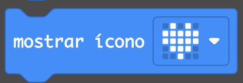 |
| pausa (ms): Hacemos una pausa de 100 ms (milésimas de segundo) antes de cambiar al siguiente icono. | 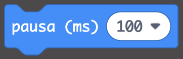 |
| mostrar ícono: lo usamos una segunda vez para mostrar, en este ejemplo, el corazón pequeño y conseguir el efecto de animación. | 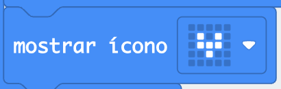 |
Intenta escribir tú el código completo. Si no te funciona correctamente, echa un vistazo haciendo clic aquí abajo:
 Prueba a ponerlo en Makecode y comprueba en la micro:bit virtual que aparece el efecto de latido de un corazón:
Prueba a ponerlo en Makecode y comprueba en la micro:bit virtual que aparece el efecto de latido de un corazón:
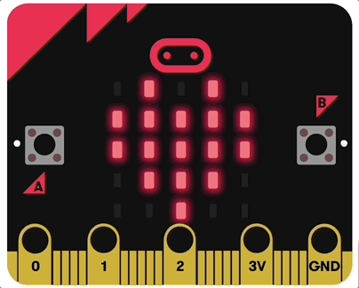
Práctica 3 - Icono personalizado
Podemos crear en MakeCode un icono con la forma que queramos. La única limitación que se nos impone es nuestra propia creatividad y el número de led’s disponibles.
Necesitamos dos bloques:
|
al iniciar: ejecuta la secuencia de instrucciones que contenga cuando encendemos la placa de Micro:bit. |
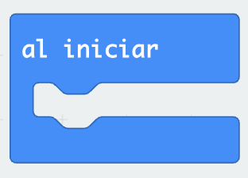 |
|
mostrar LEDs: en el bloque que nos ofrece, hacemos clic en los píxeles oportunos y creamos la imagen que deseemos mostrar en la placa. Si hacemos clic en un LED apagado, lo pondrá como encendido y viceversa, si hacemos clic en uno encendido, lo pondrá apagado. |
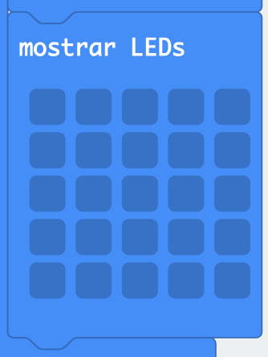 |
Te dejo ayuda con el código por si la necesitas:
 En la pantalla aparecerá esa figura y se quedará ahí todo el rato si no ponemos ningún otro bloque que modifique la pantalla. Por eso no nos ha hecho falta meter los bloques en el "Por siempre".
En la pantalla aparecerá esa figura y se quedará ahí todo el rato si no ponemos ningún otro bloque que modifique la pantalla. Por eso no nos ha hecho falta meter los bloques en el "Por siempre".
Haz la prueba en MakeCode y prueba a poner la figura que quieras. Si pones esta misma, tendrá que aparecer lo siguiente en tu placa virtual:
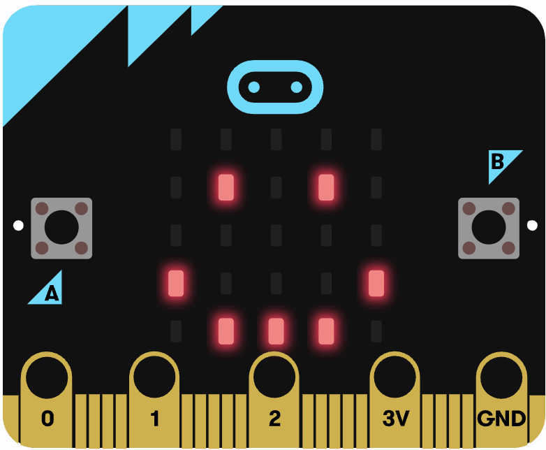
Práctica 4 - Datos numéricos
Otra posibilidad que nos ofrece Micro:bit, a través de la matriz LED, es la mostrar números, que puede ser el valor de la temperatura ambiente, velocidad, el resultado de una operación matemática, etc. En este ejemplo, vamos a hacer que muestre un número elegido al azar entre 0 y 9.
Bloques que tenemos que utilizar:
|
para siempre: ejecuta la secuencia de instrucciones de forma indefinida. |
|
|
mostrar cadena: muestra la cadena de caracteres que hayamos escrito en la zona blanca del bloque. |
|
| escoger al azar de: devuelve un número entero al azar, comprendido entre los valores que se hayan escrito en el bloque. Este bloque está en la categoría "Matemática". |
El programa completo lo tienes aquí:
 Fíjate que, como hemos puesto el código en un bloque "para siempre", van a estar apareciendo números aleatorios entre 0 y 9 constantemente. Comprueba tú el código y verás que te saldrán números diferentes a los que me salen a mí:
Fíjate que, como hemos puesto el código en un bloque "para siempre", van a estar apareciendo números aleatorios entre 0 y 9 constantemente. Comprueba tú el código y verás que te saldrán números diferentes a los que me salen a mí:
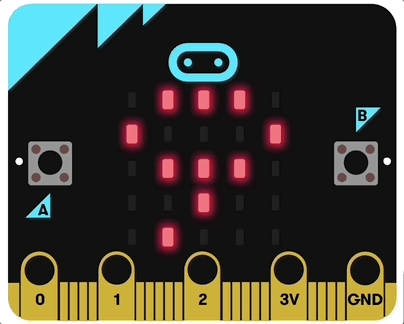